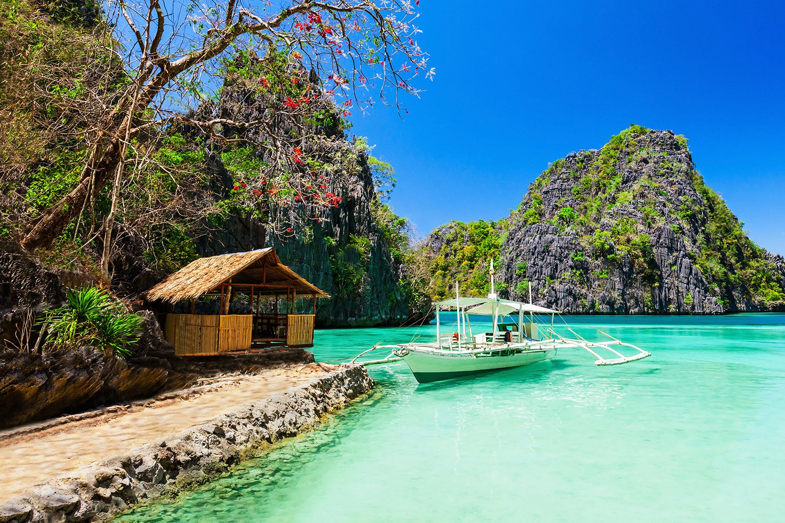

Manila
Manila is the capital of the Philippines, known for
its modernity and history. Tourists can explore the historical landmarks,
markets, indulge in delicious Filipino cuisine, and enjoy the vibrant
nightlife. It is a must-visit destination for any traveler exploring the
Philippines.
Intramuros
Intramuros is a historic walled area within the city of Manila
in the Philippines, known for its well-preserved colonial-era
architecture and Spanish-style plazas.
Rizal Park
Rizal Park is a historical urban
park that is dedicated to the country's national hero, Jose Rizal, and
is a popular tourist destination for its scenic views, cultural events,
and iconic landmarks.
Manila Bay
Manila Bay offers stunning sunset views and a
variety of entertainment options for tourists, such as restaurants, bars,
and cultural attractions.
Binondo
Binondo in Manila is a vibrant district that combines Chinese
and Filipino cultures, boasting of bustling markets, historic landmarks,
and delicious food that make it a top destination for tourists.
National Museum
The National Museum of the Philippines is a must-visit destination
for tourists, showcasing a vast collection of cultural and historical
artifacts that celebrate the country's rich and diverse heritage.
Ilocos
Vigan, located in the Ilocos Region of the
Philippines, is a city that is rich in history and culture. It is well-known
for its well-preserved Spanish colonial architecture, with its cobbled streets
and beautifully crafted buildings that evoke the city's rich past. Founded in
the 16th century, the city has been able to maintain its colonial charm, making
it a favorite destination for tourists.
Vigan Cathedral
The Vigan Cathedral is a beautiful Baroque-style church featuring intricate
architecture and stunning views from its bell tower.

Bantay Church
The Bantay Church Bell Tower is a historical landmark in Ilocos Sur,
Philippines where visitors can climb to the top of the
tower for panoramic views of the surrounding countryside.

Calle Crisologo
Calle Crisologo is a charming cobblestone street in Vigan, Philippines
that transports tourists to the Spanish colonial era with its well-preserved
heritage houses, horse-drawn carriages, and local souvenir shops.
Plaza Burgos
Plaza Burgos is a historic square located in the heart of Vigan City,
Philippines. It is a popular tourist destination known for its Spanish
colonial architecture, local food stalls, and vibrant nightlife.
Pagburnayan Jar Factory
Pagburnayan Jar Factory is a popular destination
where visitors can witness the traditional process of making pottery by
skilled artisans and even try their hand at creating their own piece of
pottery.
Baguio
Baguio, also known as the "Summer Capital of the Philippines,"
is a scenic city nestled in the Cordillera Mountains of Northern Luzon. With its cool climate,
picturesque views, and vibrant cultural scene, it offers numerous attractions to tourists.
Burnham Park
Burnham Park is a popular tourist destination located in the heart of Baguio City
in the Philippines. It offers a scenic lake, picturesque gardens, and various recreational
activities such as biking, boating, and jogging.

Mines View Park
Mines View Park is a renowned tourist spot offering stunning vistas of the Cordillera
mountain range, traditional Igorot culture, and local delicacies.

Camp John Hay
Camp John Hay is a picturesque destination filled with towering pine trees,
providing a tranquil and refreshing ambiance for tourists seeking an escape
from the hustle and bustle of city life.
The Mansion
The mansion is a luxurious and historic presidential rest house, showcasing
ornate architecture and furnishings, and offering a glimpse into the opulent
lifestyle of past presidents.

La Trinidad Strawberry Farm
The La Trinidad Strawberry Farm offers a unique and enjoyable experience for tourists who
want to pick fresh strawberries straight from the farm and indulge in various strawberry-themed
dishes and delicacies.
Bicol
Bicol is a stunning region in the Philippines that boasts of natural
wonders, such as the perfectly shaped Mayon Volcano, pristine beaches, and exciting outdoor
activities, like island hopping, snorkeling, and trekking.
Cagsawa Church
Cagsawa Church is a historical landmark that was buried by
volcanic ash from the nearby Mayon Volcano in 1814. Today, it is a popular tourist
destination where visitors can see the church's iconic bell tower ruins.

Mayon Volcano
Mayon Volcano is a stunning natural wonder with a near-perfect cone
shape that offers breathtaking views for adventurous tourists who are up for a challenge in its
challenging hiking trails.
Donsol Bay
Donsol Bay is a prime destinationfor tourists seeking an opportunity to swim with gentle
giants - whale sharks - in their natural habitat.
Caramoan
Caramoan is a remote and picturesque group of islands in the Philippines that boasts
crystal-clear waters, white sand beaches, and limestone cliffs perfect for island hopping,
snorkeling, and rock climbing.
Calaguas
Calaguas is a group of islands located in Camarines Norte, Philippines known for
its pristine white sand beaches and crystal-clear waters, making it a popular
destination for beach lovers and island adventurers.
Cebu
Cebu is a beautiful province in the Philippines that offers a
mix of cultural experiences and natural wonders. With its rich history, stunning beaches,
and delicious cuisine, Cebu is a must-visit destination for any traveler looking to immerse
themselves in the beauty and diversity of the Philippines.
Magellan's Cross
Magellan's Cross is a significant historical landmark in Cebu City, Philippines, where
tourists can see the wooden cross planted by Ferdinand Magellan in 1521 to signify the
introduction of Christianity in the country.

Bantayan Island
Bantayan Island is a tropical paradise located in the Visayan Sea,
known for its crystal-clear waters, white sand beaches, and laid-back
island vibe.

Oslob
Oslob is a picturesque town in the Philippines known for
its whale shark watching experience where visitors can swim with
these gentle giants in their natural habitat.

Moalboal
Moalboal is a popular tourist destination located in Cebu,
Philippines known for its stunning waterfalls, which offer a
refreshing and scenic retreat from the tropical heat.

Sirao Garden
Siro Garden in Cebu, also known as Little Amsterdam, is a
picturesque destination popular among tourists for its charming
windmills, colorful tulips, and Dutch-inspired architecture.
Palawan
Palawan is a tropical paradise located
in the western Philippines that boasts stunning beaches, crystal-clear
waters, and abundant marine life. Known for its breathtaking limestone
cliffs and pristine coral reefs, Palawan offers a variety of activities
for tourists, from island hopping and snorkeling to jungle trekking and
wildlife watching. Whether you're looking for a relaxing getaway or an
adventure-packed vacation, Palawan has something to offer for everyone.

Puerto Princesa Underground River
The Puerto Princesa Underground River is a UNESCO World Heritage
site. It features a navigable river that
runs underground through a cave system, and is home to unique rock
formations and diverse wildlife.

Blue Lagoon
Blue Lagoon in Palawan, Philippines
is a picturesque spot with clear waters and
limestone cliffs, perfect for swimming and snorkeling.

Tubbataha Reef
Tubbataha Reef is a protected marine area
that boasts stunning coral formations, diverse marine life, and
crystal-clear waters. It is a popular destination for diving enthusiasts
and nature lovers alike.

Twin Lagoon
Twin Lagoon in Palawan features two picturesque
lagoons separated by a towering cliff, where tourists can swim and
kayak amidst beautiful natural scenery.

Nacpan Beach
Nacpan Beach in Palawan is a breathtaking
4-kilometer stretch of white sand and
crystal-clear waters, perfect for a relaxing
beach vacation.
Bohol
Bohol is a serene and charming
province in the Philippines that boasts pristine beaches,
crystal-clear waters, and breathtaking natural attractions,
making it an ideal destination for tourists seeking a relaxing
beach vacation and outdoor activities such as snorkeling and diving.
The province also offers opportunities to explore the local culture
and traditions by visiting countryside villages, farms, and witnessing
the unique handicrafts that the area is famous for.

Baclayon Church
The Baclayon Church in Bohol is a centuries-old Catholic church
that boasts of stunning Baroque architecture and a rich history,
making it a must-visit for tourists interested in religious and
cultural landmarks.
Loboc River Cruise
The Loboc River Cruise is a scenic and relaxing boat
ride along the tranquil Loboc River. Passengers can enjoy a delicious
buffet meal while taking in the beautiful natural surroundings and
traditional music performances.

Chocolate Hills
The Chocolate Hills is a geological formation located in Bohol,
Philippines. It is composed of more than 1,200 limestone hills
that turn brown during the dry season, resembling chocolate drops.

Philippine Tarsier Sanctuary
The Philippine Tarsier Sanctuary is a reserve in Bohol where visitors
can see the small and unique Philippine tarsier primate in its natural habitat.
Hinagdanan Cave
Hinagdanan Cave in Bohol, Philippines is a must-visit tourist spot
with beautiful rock formations, an underground lake, and impressive
stalactites and stalagmites.
Aklan
Aklan is a province located in the Western Visayas region
of the Philippines, known for its captivating beauty, natural attractions, and friendly
locals. It offers a diverse range of landscapes, from pristine beaches to lush jungles,
making it a nature lover's paradise. The province is also rich in culture and history,
evident in its colonial architecture, religious landmarks, and traditional festivals.
Aklan's people are renowned for their hospitality and warmth, providing a welcoming
environment for visitors to experience their way of life. With its perfect blend of nature
and culture, Aklan offers a unique and unforgettable travel experience for anyone seeking
an authentic taste of the Philippines.

White Beach Boracay
White Beach Boracay is a world-famous, four-kilometer-long stretch of powdery white
sand and crystal-clear waters located in the Visayan region of the Philippines, offering
a stunning tropical paradise for tourists.
Puka Beach
Puka Beach is a serene and less crowded beach in Boracay, Philippines known for
its fine white sand and crystal clear waters, making it a popular spot for swimming
and sunbathing.

Willy's Rock
Willy's Rock is a popular tourist destination in Boracay Island, Philippines,
featuring a picturesque rock formation with a statue of the Virgin Mary atop it.
Bakhawan Eco-Park
Bakhawan Eco-Park is a mangrove forest park located in Kalibo, Aklan.
It offers visitors a scenic boardwalk, a serene natural environment, and a
chance to learn about the importance of mangrove conservation.

Ariel's Point
Ariel's Point is a popular day trip destination in Boracay
known for its stunning natural beauty, crystal clear waters, and exciting
cliff diving and water activities. It's a perfect getaway for adventure seekers and nature lovers.
Davao
Davao City, located in the southern part of the Philippines, is a
vibrant and bustling city that offers a mix of urban and natural attractions. Home to the country's
highest peak, Mount Apo, it's also known for its beaches, parks, museums, and markets. Visitors can
experience the local culture by trying durian, a popular fruit in the region, and witness the city's
strict anti-smoking and anti-littering laws. Davao City is a great destination for adventure-seekers,
nature-lovers, and those who want to experience a unique Filipino culture.

People's Park Davao
People's Park in Davao is a popular tourist destination known for its vibrant flora,
sculptures, and interactive water features. It is a perfect place for visitors to relax,
take photos, and enjoy the local culture.
Philippine Eagle Center
The Philippine Eagle Center in Davao is a must-visit for tourists to see the majestic
Philippine eagle up close and learn about conservation efforts.

Mount Apo
Mt. Apo is a popular tourist destination in Davao known for being the highest mountain
in the Philippines. It is a popular destination for hiking and camping due to its beautiful
scenery and challenging trails.
Davao Butterfly House
The Davao Butterfly House is a must-visit attraction for nature enthusiasts and
families, featuring a stunning collection of various butterfly species and an educational
tour about their life cycle and habitat.

Dahican Beach
Dahican Beach is a stunning white sand beach known for its crystal clear waters and
perfect waves for surfing. It is also home to the Pawikan Sanctuary, a nesting ground
for endangered sea turtles.
Siargao
Surrounded by turquoise waters and pristine beaches,
Siargao Island is a tropical paradise that offers a unique blend of adventure,
relaxation, and natural beauty. Known as the surfing capital of the Philippines,
Siargao is home to world-renowned surf breaks such as Cloud 9, while also offering
a variety of other activities including island hopping, diving, snorkeling, and lagoon
exploring. With its laid-back island vibe, friendly locals, and delicious local cuisine,
Siargao is a must-visit destination for anyone seeking a memorable and authentic travel
experience in the Philippines.
Tayangban Cave Pool
Tayangban Cave Pool in Siargao is a stunning natural attraction that features
a crystal clear pool surrounded by limestone cliffs, perfect for swimming and exploring.

Guyam Island
Guyam Island is a small and picturesque island located in Siargao,
Philippines. It is known for its white sandy beaches, clear waters,
and great surfing spots.

Daku Island
Daku Island is a beautiful tropical paradise. It offers crystal-clear
waters, white sandy beaches, and lush palm trees, making it a perfect
destination for beach lovers and island adventurers.
Cloud 9
Cloud 9 in Siargao is a world-renowned surfing spot known for its challenging
and powerful waves, making it a must-visit destination for surfing enthusiasts from
all over the world.

Taktak Falls
Taktak Falls in Siargao is a beautiful natural attraction with
crystal-clear waters perfect for swimming and relaxing in a serene jungle setting.